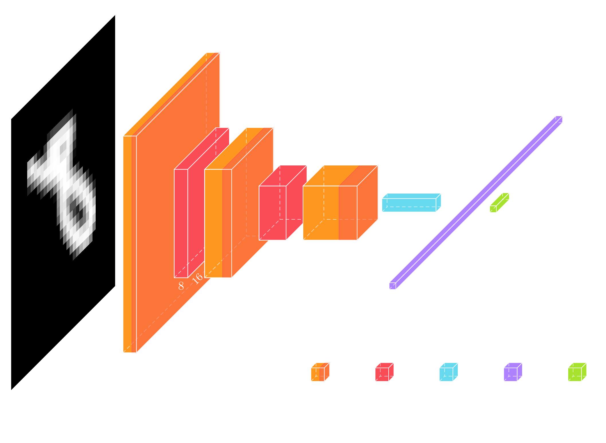
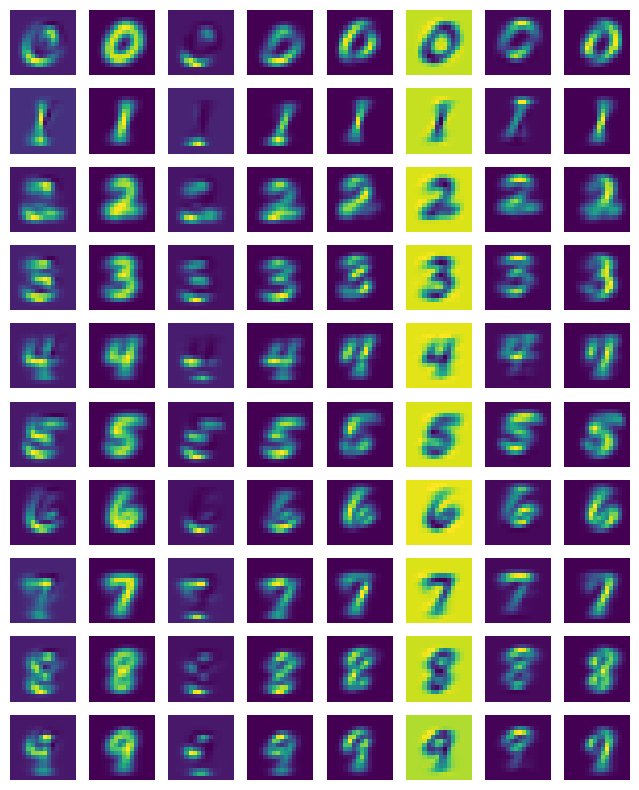
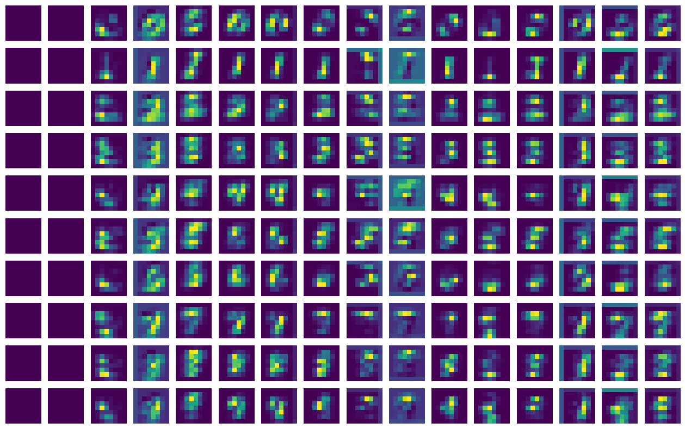
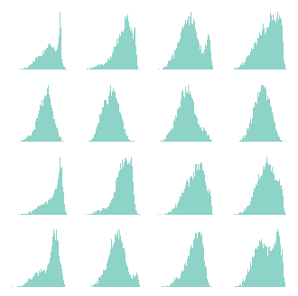

Latent Diffusion Series: MNIST Classifier
In the Latent Diffusion Series of blog posts, I'm going through all components needed to train a latent diffusion model to generate random digits from the MNIST dataset. In this first post, we will train a simple classifier to classify MNIST digits. This will later be used for scoring the quality of the generated digits using a variant of the so-called Fréchet inception distance (FID). For the other posts, please look below:
- MNIST Classifier
- Variational Autoencoder (VAE)
- Latent Diffusion Model
The links will become active as soon as they the posts are completed.
AI papers nowadays can be very daunting, especially ones introducing new concepts, because they build very complex models. This is due to pressure from the audience to present results that are better than previous papers, which leads to micro-optimizations of the architectures. I became a big fan of Andrej Karpathy, after he released a series of video lectures where he reduced a few AI concepts down to the bare minimum, making it easy for everyone to grasp backpropagation, and even transformers. As someone that had no formal education in AI, but am self-taught, this inspired me to look into AI papers I'd like to understand better and try to simplify models as much as possible while preserving their core functionality.
The first concept I want to tackle are Diffusion Models, and more specifically, Latent Diffusion Models. In this series of posts, we will implement the bare minimum required to train a latent diffusion model to generate digits from the MNIST dataset. With bare minimum, here, I mean that we will implement the models using a machine learning framework. We will be using Pytorch, so I assume that the reader is at least familiar with it, but other frameworks can be used as well. I have created a Python notebook on Colab, which you can use to follow along and experiment with this post's code.
Diffusion Models
Diffusion probabilistic models are a class of models whose job is to remove noise of a known distribution from data – At least, that's one way of looking at diffusion models, and if you'd like to learn more about the many sides of Diffusion models, have a look at this article by Yang Song, and this one by Sander Dieleman, as well as this paper by Calvin Luo. – Diffusion models were first developed as generative models for generating samples that follows the original dataset distribution. The goal of a generative models is to learn to model the true data distribution from observed samples, so that generating new samples is as simple as sampling the learned distribution. Diffusion models achieve this by corrupting the dataset with progressively larger amounts of noise and training a set of probabilistic models to reverse corruption step. This reverse problem is made tractable by using knowledge of the functional form of the reverse distributions.  Above you see an example of images from the MNIST dataset corrupted with increasing amounts of noise.
MNIST Dataset
The MNIST dataset, consists of a set of images of handwritten digits with dimensions of 28x28 pixels. There are 70000 images in total and it is already split in 60000 training and 10000 test images. Below you can see a sample of a few characters from the dataset. For each image in the dataset, there is a corresponding label indicating which number is depicted. The dataset lends itself nicely for various learning tasks, such as classification, for which, to this date, an accuracy of 99.87% has been achieved 1.
To easily use the dataset in Python, we use torchvision,
import torch from torchvision.datasets import MNIST data_train = MNIST('.', download=True, train=True) data_test = MNIST('.', download=True, train=False)
but you could also download the dataset from http://yann.lecun.com/exdb/mnist/, although you'll need to write some code to parse the binary files.
The dataset, as we get it from torchvision has values between 0 and 255, and is of type uint8, so, we will convert it to a format that's easier to use for training the classifier, by normalizing it to [0, 1). Furthermore, we will use Pytorch to pad the images with a 2 pixel border, bumping the size to 32x32, which is also more convenient for convolutional neural networks (CNN) that downsample the input at each level.
x_train = data_train.data / 255.0 x_val = data_test.data / 255.0 y_train = data_train.targets y_val = data_test.targets x_train = torch.nn.functional.pad(x_train, (2,2,2,2), value=0) x_val = torch.nn.functional.pad(x_val, (2,2,2,2), value=0)
We can easily sample a set of digits for each label,
import matplotlib.pyplot as plt fig, axes = plt.subplots(10,10,figsize=(5,5)) for num in range(10): x_num = x_val[y_val == num,...] sample_ids = torch.randint(0, x_num.shape[0], size=(10,)) for i in range(10): sid = sample_ids[i] axes[num,i].imshow(x_num[sid,:,:], cmap='gray') axes[num,i].axis('off') plt.show()
which produces a nice visualization of the variations that can be seen in each handwritten digit.
Model
For the classification model, we use a simple convolutional neural network, which is similar to models like LeNet.  Above you can see a visual presentation of the network architecture but often the actual code for generating this network architecture can be easier to read.
class Classifier(torch.nn.Module): def __init__(self): super(Classifier, self).__init__() self.layers = torch.nn.Sequential( # 1x32x32 torch.nn.Conv2d(1, 8, 3, padding='same'), torch.nn.ReLU(), torch.nn.MaxPool2d(2, 2), # 2 # 8x16x16 torch.nn.Conv2d(8, 16, 3, padding='same'), torch.nn.ReLU(), torch.nn.MaxPool2d(2, 2), # 5 # 16x8x8 torch.nn.Conv2d(16, 32, 3, padding='same'), torch.nn.ReLU(), torch.nn.AvgPool2d(4, 4), # 8 # 32x2x2 torch.nn.Flatten(), torch.nn.Dropout(), torch.nn.Linear(128, 64), torch.nn.ReLU(), torch.nn.Linear(64, 32), torch.nn.ReLU(), torch.nn.Linear(32, 10), ) def forward(self, x): y = self.layers(x) return y
Each level consists of a convolution, a ReLU non-linearity, and a Max or Average Pooling layer which downsample the input, producing 3 resolution levels. These levels are feature extractors, and the pooling layers are used to make sure that features are extracted at resolution levels. Finally, a linear layer is used at the output, to reduce the feature space to 10 dimensions. This 10-dimensional vector encodes the predicted digit as the position of its maximum value. This model has a total of 16554 parameters.
Training
To train the model, we use the cross-entropy loss. The pytorch implementation of this loss expects the unnormalized logits for each class as input. We use Adam2 as our optimizer of choice.
epochs = 100 batch_size = 256 learning_rate = 1e-3 i_log = 10 optimizer = torch.optim.Adam(model.parameters(), learning_rate) num_batches = int(math.ceil(x_train.shape[0] / batch_size)) losses = [] for i in range(epochs): model.train() train_ids = torch.randperm(x_train.shape[0]) average_loss = 0.0 for bid in range(num_batches): with torch.no_grad(): batch_ids = train_ids[bid*batch_size:(bid+1)*batch_size] x = x_train[batch_ids,None,...] y = y_train[batch_ids,...] y = y.to(device) x = x.to(device) y_pred = model(x) loss = cross_entropy(y_pred, y) optimizer.zero_grad() loss.backward() optimizer.step() with torch.no_grad(): average_loss += loss.cpu().numpy() if (i + 1) % i_log == 0: model.eval() with torch.no_grad(): y_val_pred = model(x_val[:,None,...].to(device)).cpu() loss_val = cross_entropy(y_val_pred, y_val) loss_val = loss_val.numpy() average_loss /= num_batches losses.append([average_loss, loss_val]) print(f'Epoch {i} loss = {average_loss}, validation loss = {loss_val}') average_loss = 0.0
As you can see from the code, for each epoch, we first permute the training set and then iterate over the batches. We keep the dataset on the CPU side so we have to move each batch to the device we're doing the calculations on.
Training this simple model doesn't take too long. We can plot the train and validation loss as a function of the epochs,  You will notice that the validation loss seems to be lower than the training loss, but this is merely an artifact of the way we calculate the train loss; it's averaged over the batches while the model keeps improving during an epoch. Calculating the training loss over the whole dataset can be costly, so we are usually fine with this approach as long as we keep that in mind when comparing the two losses.
Evaluation
Let us first calculate the accuracy,
model.eval() with torch.no_grad(): y_val_pred = model(x_val[:,None,...].to(device)).cpu().numpy() accuracy = np.mean(np.argmax(y_val_pred, axis=-1) == y_val.numpy()) print(f'Model accuracy: {100.0 * accuracy:.2f}%')
and we find that the accuracy over the validation dataset is a quite decent 99.1%.
For a simple model and task like this it's really interesting to look at the activations. To visualize the activations, I average the outputs of the pooling layers over the validation set for each number.
number_feature_maps = [] for number in range(10): model.eval() feature_maps = [] with torch.no_grad(): y = x_val[y_val == number,None,...].to(device) for li, l in enumerate(model.layers): y = l(y) if li in [2,5,8]: feature_maps.append(torch.mean(y, dim=0).cpu().numpy()) number_feature_maps.append(feature_maps)
Then I plot the first activation below, where each row are the activations for the corresponding number.  By plotting these activations, we see that some activations work as pass through, letting the scaled down input to pass to the next level. Some other observations we one can extract by retraining the network and plotting the activations is that sometimes, some activations are duplicated. Furthermore, we find that the activations light up when certain parts are detected, like the 3rd activation which detects horizontal lines, or the 5th activation which seems to detect diagonals.
I also plotted the 2nd set of activation similarly to the plot above. Here it already becomes difficult to reason about their function.  We see that the first 2 activations are mostly inactive (which is a waste of memory/compute). If we look at the 7th activation of the number 4, we see that it shows 3 bright pixels, perhaps corresponding to its 3 vertical edges.
Finally, I would like to remind you that the reason we implemented this classifier is to be able to calculate the FID so that we can assess the quality of generated digits of the diffusion model we are going to implement. One of the assumptions of the FID is that the activations are normally distributed. This is used so that an exact expression is calculated for comparing the distributions of the activations of the generated digits and the ones in the dataset. So let us plot the distribution of the first few activations of the last convolutional layer, for the validation dataset. This is done with the following code,
model.eval() with torch.no_grad(): latent_val = x_val[:,None,...].to(device) for i in range(7): latent_val = model.layers[i](latent_val) latent_val = torch.nn.functional.avg_pool2d(latent_val, (4,4)) latent_val = latent_val.view(latent_val.shape[0], -1).cpu().numpy() # Plot the distribution of the first 16 latent values for the validation set. fig, axes = plt.subplots(4,4, figsize=(4,4)) for i in range(16): axes[i//4,i%4].hist(latent_val[:,i], bins=100)
Note how I apply the layers up to the last convolution, not including the ReLU, since the ReLU removes the negative activations, skewing the distributions. Also, I perform an average pooling, but this is just to reduce the number of activations.  So, although we cannot say that the distributions are exactly normally distributed, they are really close. To be honest, I'm not sure what the impact of this is when assessing the quality of generated numbers.
Conclusion
Even though classifiers, especially MNIST ones, are simple and the topic has been quite exhausted, it is worth having a thorough look at them. The motivation for this was to assess the quality of generated numbers of the diffusion model we are going to build. By looking at the activations, we got a better understanding how the classifier works, and found that the activations are close to normally distributed, something that is assumed when calculating the FID.
I invite you to play around with the notebook, and read the next blog (when it's ready).